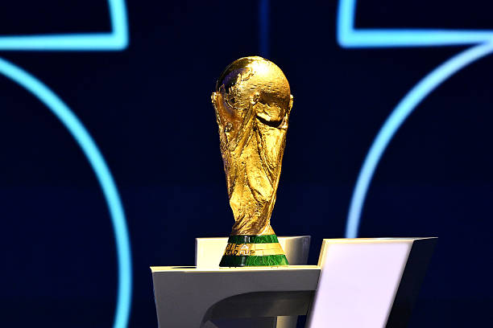
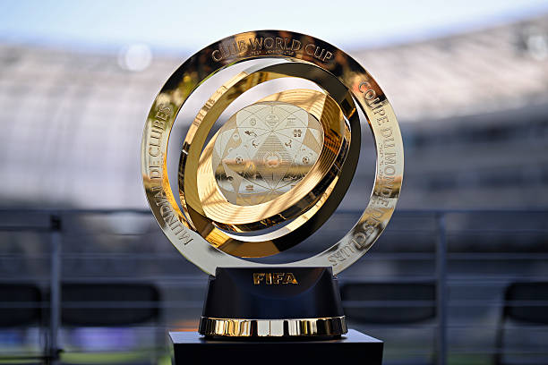
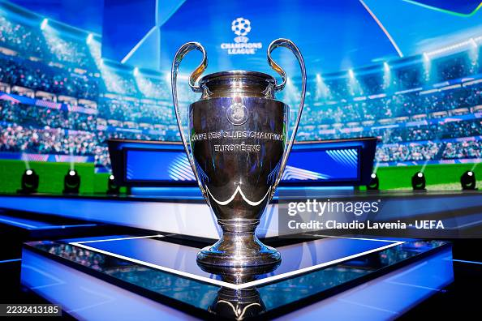
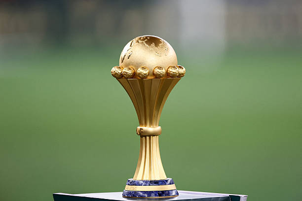
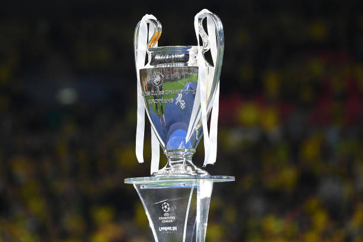
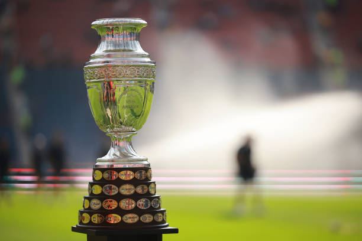
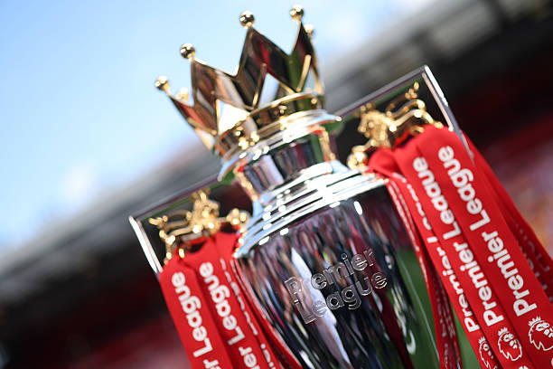
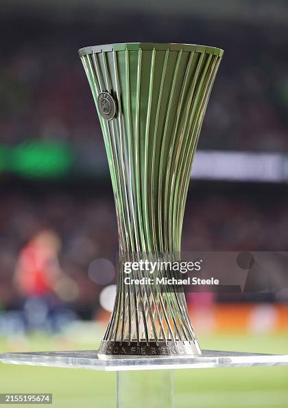
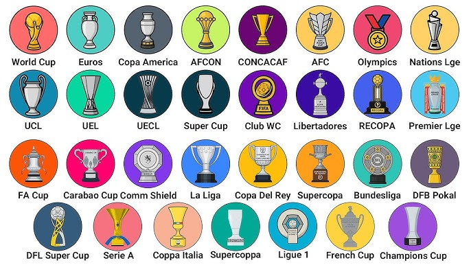

Football cups are tournament-style competitions that are usually played in a knockout (single-elimination) format, rather than a round-robin league table. These tournaments are broadly split into International Cups (country vs. country) and Club Cups (professional teams from cities or regions.
Football (soccer) cups are primarily categorized by the level of competition—ranging from international national teams to domestic club leagues. In general, cups fall into one of four main types: national team tournaments, domestic club cups, continental club championships, and super cups








